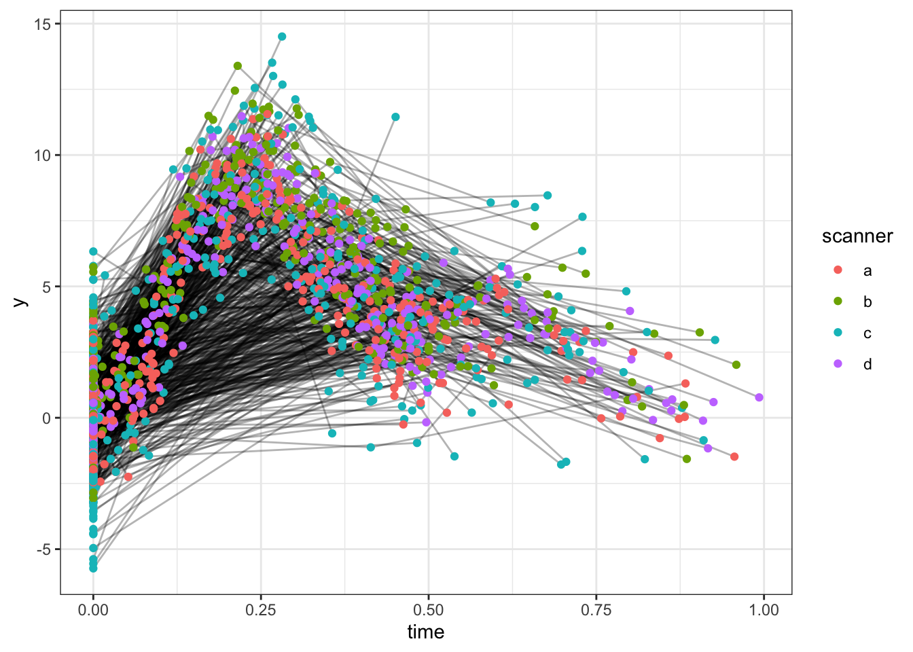
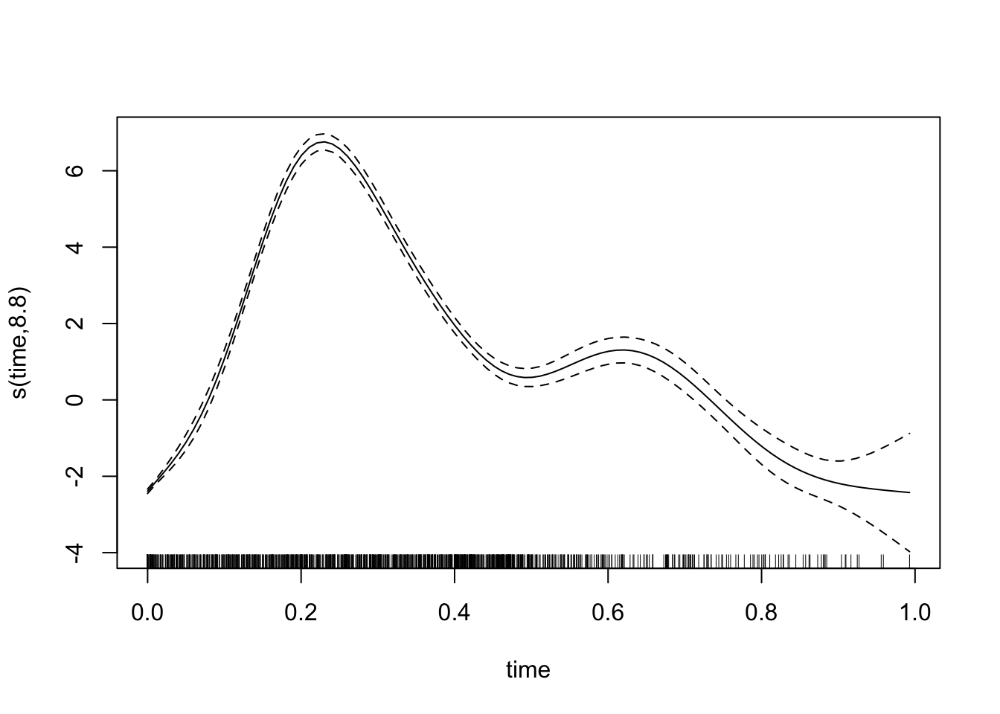
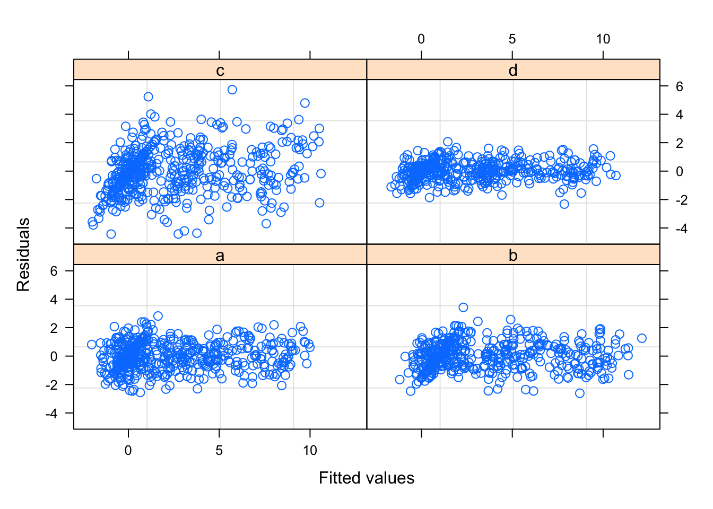

Chapter 2 Generalized Additive Mixed Models
library(tidyverse)## ── Attaching packages ─────────────────────────────────────── tidyverse 1.3.1 ──## ✓ ggplot2 3.3.5 ✓ purrr 0.3.4
## ✓ tibble 3.1.6 ✓ dplyr 1.0.7
## ✓ tidyr 1.1.4 ✓ stringr 1.4.0
## ✓ readr 2.1.1 ✓ forcats 0.5.1## ── Conflicts ────────────────────────────────────────── tidyverse_conflicts() ──
## x dplyr::filter() masks stats::filter()
## x dplyr::lag() masks stats::lag()theme_set(theme_bw())
library(mgcv)## Loading required package: nlme##
## Attaching package: 'nlme'## The following object is masked from 'package:dplyr':
##
## collapse## This is mgcv 1.8-38. For overview type 'help("mgcv-package")'.The utility of GAMMs for estimating lifespan brain trajectories is described in Fjell et al. (2010) and Sørensen, Walhovd, and Fjell (2021). The main R packages for GAMMs are mgcv and gamm4.
2.1 Scanner/batch effects
A common problem is that longitudinal data have been collected on different scanners. There can be systematic differences between values estimated on different scanners, and they can have different noise levels. We will simulate some data to illustrate the problem.
scanners <- letters[1:4]
scanner_bias <- c(0, 1, .4, .2)
scanner_noise <- c(1, 1, 2, .5)
names(scanner_bias) <- names(scanner_noise) <- scanners
n <- 1000
set.seed(9988)
dat <- tibble(
id = seq_len(n),
time = 0,
random_intercept = rnorm(n)
) %>%
mutate(num_observations = sample(1:3, size = nrow(.), replace = TRUE)) %>%
uncount(num_observations) %>%
group_by(id) %>%
mutate(timepoint = row_number()) %>%
ungroup() %>%
mutate(
time = if_else(timepoint == 1, time, runif(nrow(.), max = .5)),
scanner = factor(sample(scanners, size = nrow(.), replace = TRUE))
) %>%
group_by(id) %>%
mutate(time = cumsum(time)) %>%
ungroup() %>%
mutate(
noise = rnorm(nrow(.), sd = scanner_noise[scanner]),
bias = scanner_bias[scanner],
y = 0.2 * time^11 * (10 * (1 - time))^6 + 10 *
(10 * time)^3 * (1 - time)^10 + bias + noise + random_intercept
) %>%
select(-noise, -bias, -timepoint)Here is a spaghetti plot of the data.
ggplot(dat, aes(x = time, y = y, group = id)) +
geom_line(alpha = .3) +
geom_point(aes(color = scanner))
There are two ways of correcting for scanner bias. We can either include scanner as a fixed effect, or we can include it as a random effect. With as few as 4 scanners this will not make much of a difference in practice, but the interpretations of the models are a bit difference. With fixed effects we are interested in the specific scanners in this study, and want to estimater their bias. With random effects we would consider scanners as samples from some population of scanners, and our interest would be in the variation between scanners. Given the limited number of scanners, we use fixed effects in this example.
mod1 <- gamm(y ~ s(time) + scanner, random = list(id =~ 1), data = dat)We can plot the model fit.
plot(mod1$gam)
And inspect the output. We that the scanner term has discovered that there are systematic differences between the scanners. It won’t be exact, since this is a randoom sample, but it points in the right directions.
summary(mod1$gam)##
## Family: gaussian
## Link function: identity
##
## Formula:
## y ~ s(time) + scanner
##
## Parametric coefficients:
## Estimate Std. Error t value Pr(>|t|)
## (Intercept) 2.36789 0.07091 33.392 <2e-16 ***
## scannerb 0.98792 0.09460 10.443 <2e-16 ***
## scannerc 0.14460 0.09211 1.570 0.1166
## scannerd 0.16303 0.09376 1.739 0.0822 .
## ---
## Signif. codes: 0 '***' 0.001 '**' 0.01 '*' 0.05 '.' 0.1 ' ' 1
##
## Approximate significance of smooth terms:
## edf Ref.df F p-value
## s(time) 8.795 8.795 1100 <2e-16 ***
## ---
## Signif. codes: 0 '***' 0.001 '**' 0.01 '*' 0.05 '.' 0.1 ' ' 1
##
## R-sq.(adj) = 0.775
## Scale est. = 1.6241 n = 2026The model does however assume identical residuals, regardless of scanner. We can produce a diagnostic plot showing the residuals by scanner, which shows that this assumption is not correct (as we already new). In particular, scanner d has much lower residuals than scanner c.
plot(mod1$lme, form = resid(.) ~ fitted(.) | scanner)
We can allow the residual standard deviation to differ between scanners.
mod2 <- gamm(y ~ s(time) + scanner, random = list(id =~ 1),
weights = varIdent(form = ~ 1 | scanner), data = dat)Looking at the model output, under Variance function:, we see the multipliers for each scanner.
mod2$lme## Linear mixed-effects model fit by maximum likelihood
## Data: strip.offset(mf)
## Log-likelihood: -3574.53
## Fixed: y.0 ~ X - 1
## X(Intercept) Xscannerb Xscannerc Xscannerd Xs(time)Fx1
## 2.3640655 0.9799803 0.1639192 0.1511269 2.3047793
##
## Random effects:
## Formula: ~Xr - 1 | g
## Structure: pdIdnot
## Xr1 Xr2 Xr3 Xr4 Xr5 Xr6 Xr7 Xr8
## StdDev: 24.80835 24.80835 24.80835 24.80835 24.80835 24.80835 24.80835 24.80835
##
## Formula: ~1 | id %in% g
## (Intercept) Residual
## StdDev: 1.038648 1.036847
##
## Variance function:
## Structure: Different standard deviations per stratum
## Formula: ~1 | scanner
## Parameter estimates:
## a b c d
## 1.0000000 0.9911869 1.9116612 0.4746387
## Number of Observations: 2026
## Number of Groups:
## g id %in% g
## 1 1000We can formally compare the models, and the second model wins.
anova(mod1$lme, mod2$lme)## Model df AIC BIC logLik Test L.Ratio p-value
## mod1$lme 1 8 7594.727 7639.637 -3789.363
## mod2$lme 2 11 7171.059 7232.811 -3574.530 1 vs 2 429.6675 <.0001